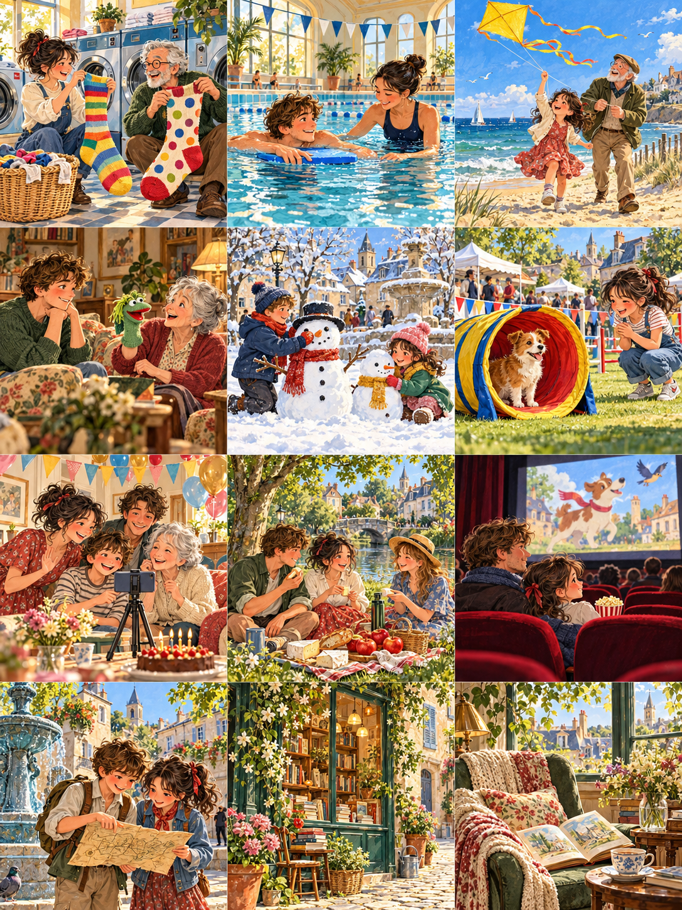

Les chaussettes géantes
The Giant Socks
At the laundry, a red sock helps two customers solve a very colourful problem.

Le mercredi soir, Zoé va laver ses vêtements dans la rue voisine. Chez elle, sa machine ne marche plus. Elle apporte un livre et un sac bleu. Dans la petite salle, un homme lit un journal. Trois machines tournent doucement. Zoé choisit celle qui est près de la fenêtre.
Show English translationHide English translation
On Wednesday evening, Zoé goes to wash her clothes in the next street. Her machine at home no longer works. She brings a book and a blue bag. In the little room, a man is reading a newspaper. Three machines are turning gently. Zoé chooses the one near the window.
Une heure après, elle met ses vêtements propres dans son sac. Mais elle trouve une énorme chaussette rouge entre ses deux chemises. Elle regarde son pied, puis la chaussette. Elle peut presque y mettre ses deux pieds ensemble. L'homme baisse son journal et commence à rire avec elle.
Show English translationHide English translation
An hour later, she puts her clean clothes in her bag. But she finds an enormous red sock between her two shirts. She looks at her foot, then at the sock. She can almost put both feet inside it. The man lowers his newspaper and starts laughing with her.
Il s'appelle Bernard et cherche justement cette chaussette. Il a posé son panier près du sac bleu. En prenant son linge, il a fait tomber plusieurs choses. Zoé trouve aussi un grand mouchoir vert. Bernard découvre une petite chaussette jaune dans la manche de son pull gris.
Show English translationHide English translation
His name is Bernard and he is looking for that very sock. He put his basket near the blue bag. When taking his washing, he dropped several things. Zoé also finds a large green handkerchief. Bernard discovers a little yellow sock in the sleeve of his grey jumper.
Ils mettent tout sur la grande table pour retrouver leurs affaires. Rouge pour Bernard, jaune pour Zoé : le travail avance vite. Mais une chaussette blanche reste au milieu. Personne ne la connaît. Alors, une dame entre avec un panier vide. Elle cherche la chaussette blanche de son petit garçon.
Show English translationHide English translation
They put everything on the big table to find their belongings. Red for Bernard, yellow for Zoé: the work goes quickly. But a white sock remains in the middle. Nobody recognises it. Then a woman comes in with an empty basket. She is looking for her little boy's white sock.
La dame remercie les deux voisins. Avant de partir, Zoé dessine une grosse étoile sur son sac bleu. Bernard attache un ruban rouge à son panier. Maintenant, leurs sacs sont faciles à reconnaître. La semaine suivante, ils se retrouvent devant les machines. Cette fois, ils échangent seulement des nouvelles.
Show English translationHide English translation
The woman thanks the two neighbours. Before leaving, Zoé draws a big star on her blue bag. Bernard ties a red ribbon to his basket. Now their bags are easy to recognise. The following week, they meet again by the machines. This time, they only exchange news.